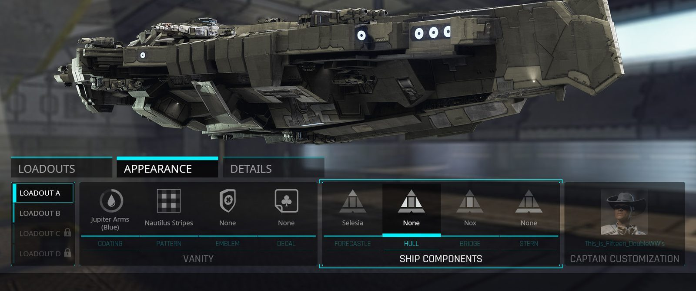
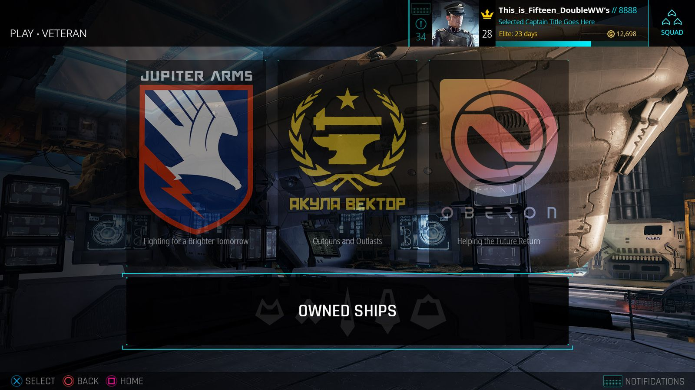
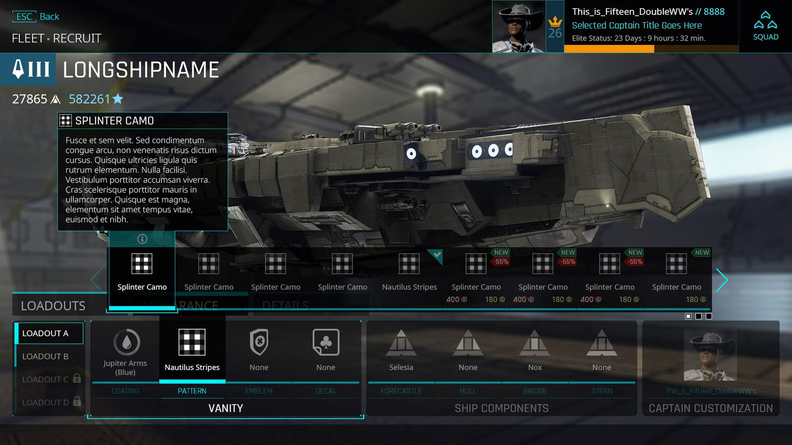
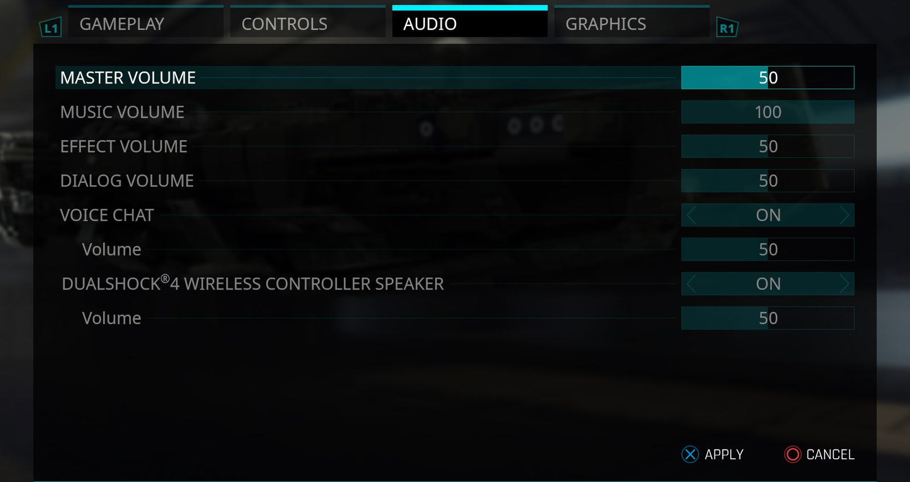
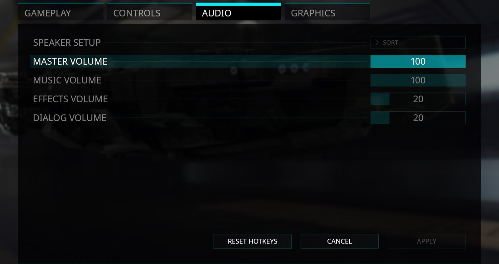
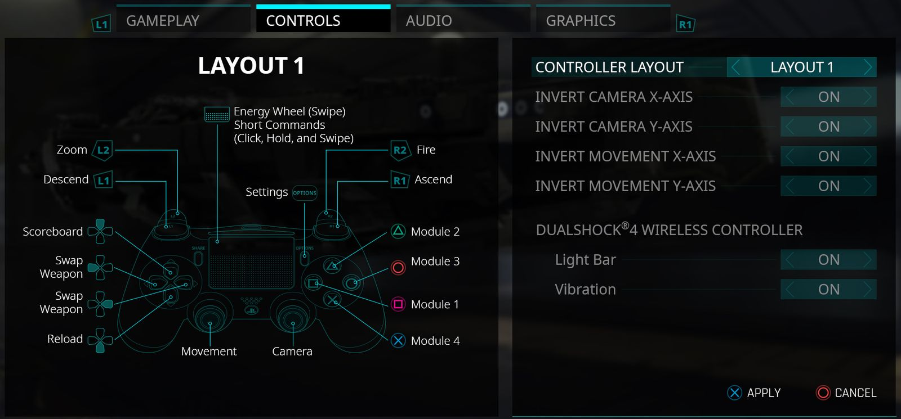
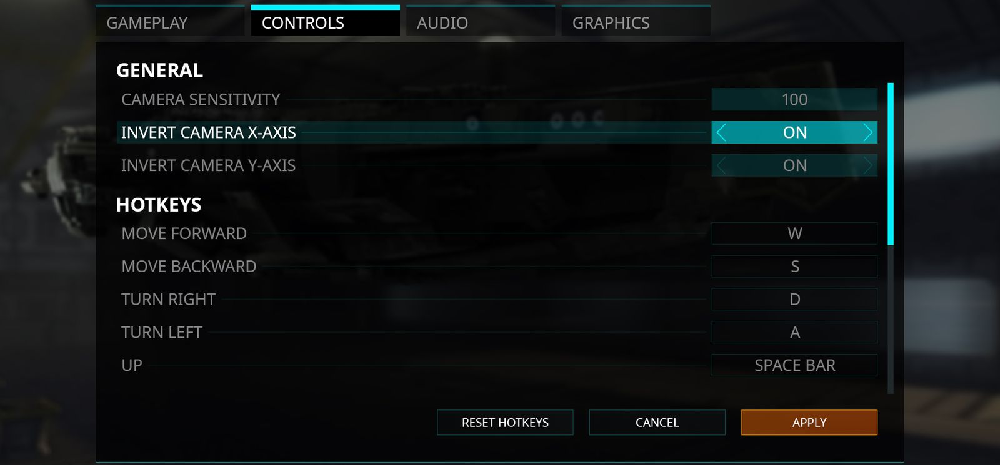
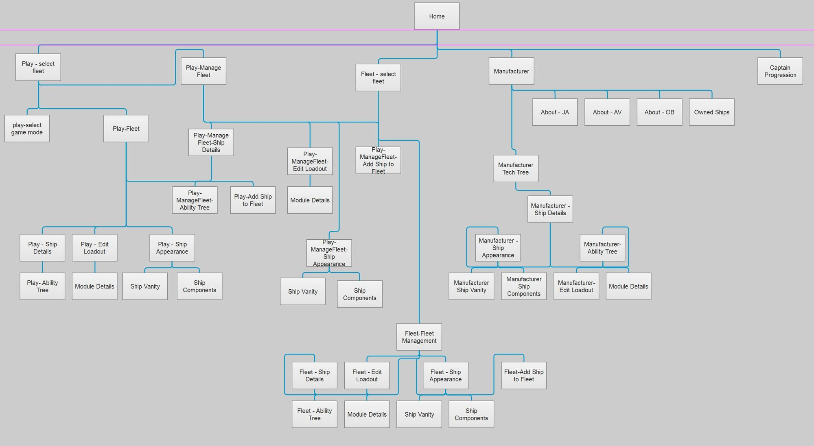
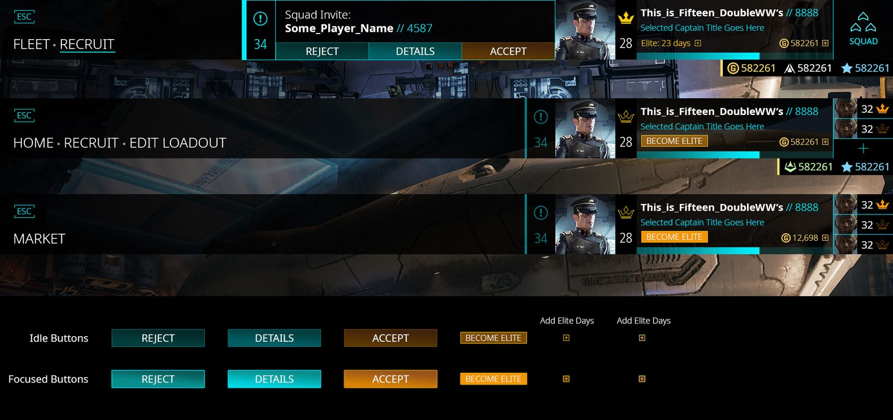
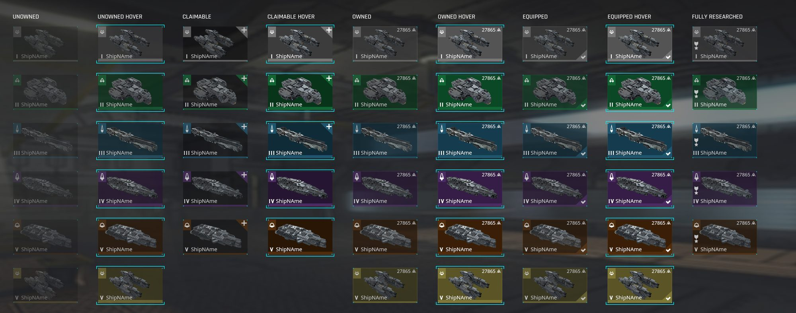

Case study · Six Foot · PC and PlayStation
One menu for any input.
Dreadnought, a AAA game from Six Foot, looked and felt like two different games on PlayStation and PC. I designed every screen of the game, and one menu architecture for both.
Shipped on PC and PlayStation, after internal QA and a worldwide beta.

The problem
One game, played as two.
The PlayStation release was optimized for a controller and the PC release for a keyboard and mouse, so one game looked and felt like two.
PS4 and PC ship customization is too divergent in both styles and interactions.
A controller
Players on PS4.
A mouse and keyboard
Players on a PC.
Both
Players on a PC who switch hands in the middle of a session, so neither device could be the afterthought.
The rule
Every direction has one job.
The goal was a single design that works well for both input devices, with one look and feel. The controller has the fewest inputs, so the strategy started there and the keyboard followed the controller’s map. The pointer can still select anything on the screen.
Left and right pick a section
One axis moves between the parts of the ship.
Up and down pick its option
The options for that part rise in a row above its slot.
Action and Back do the rest
Primary controller actions stop at the D-pad, an action button and a back button.
| Command | Controller | Keyboard and mouse |
|---|---|---|
| Section | D-pad left, right | ← → keys, or click |
| Option | D-pad up, down | ↑ ↓ keys, or click |
| Action | Action button | Left click, Enter |
| Back | Back button | Esc |
| Menu | L1, R1 bumpers | Click a tab |


Two builds
Same screen, different hands.
Where the hardware is the same, the screen is the same.


Where the hardware differs, the content differs and the frame stays.


The way back
One map, one way back.
The menu is one tree, from Home to Play, Fleet, Manufacturer and Captain Progression. Shared screens such as Ship Details and Edit Loadout appear under each path that reaches them, so Back always returns a player the way they came.

The header carries the path as a breadcrumb beside the Esc prompt, so the way back is always on screen. Its alerts and invites bring their own actions.

The parts
One tile, every state.
Every ship is one tile that takes its tier’s color and marks each state, from unowned to fully researched.
